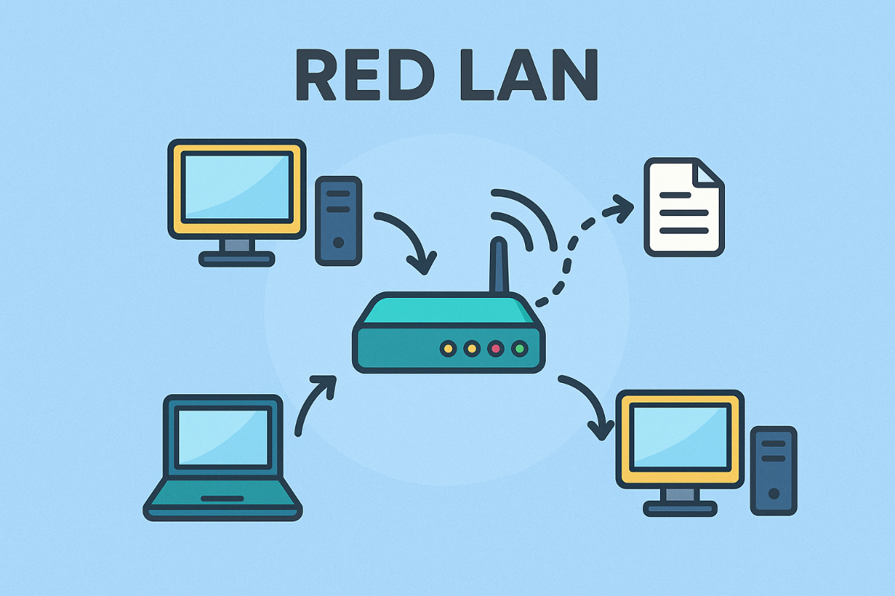

Red LAN
Una red LAN (Local Area Network) o Red de Área Local es un tipo de red informática que conecta dispositivos dentro de un área geográfica limitada, como una casa, escuela, oficina o edificio. Su objetivo principal es compartir recursos (como archivos, impresoras, internet o aplicaciones) entre varios equipos de forma rápida y eficiente.
Características de una Red LAN
- Cobertura limitada
- Alta Velocidad
- Propiedad privada
- Control Centralizada
- Seguridad
Ejemplo:
Red LAN en un colegio, los computadores del laboratorio de informática están conectados entre sí y comparten: una impresora común, el acceso a Internet, y un servidor donde se guardan los trabajos de los estudiantes.
